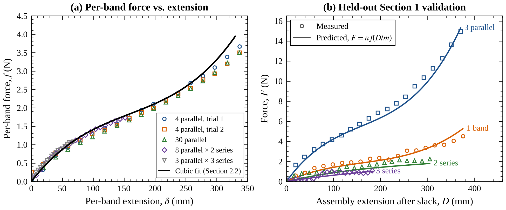
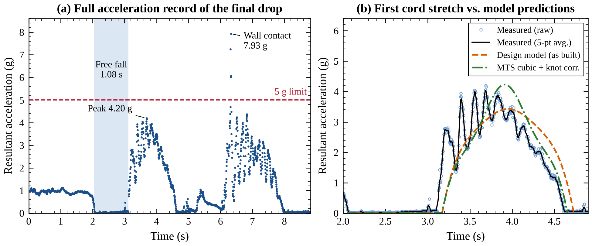

Sheet 02 of 08
Penn Engineering · 2026
A bungee cord made of 176 rubber bands, sized on demo day by a model we built from tensile tests, then checked against an instrumented 14.3 m drop.
Role
Testing, data logging, design model
Course
MEAM 3470, Penn · 2-person team
Built with
MTS tensile tests · Python · Arduino + LIS3DH accelerometer
Result
Fall predicted within 2.7%
Design a rubber-band bungee cord that lets an instrumented jumper fall as far as possible without touching the floor or going over a peak acceleration limit. The catch: the drop height, the jumper's mass, and the g limit were only announced on demo day. So instead of designing one cord, we had to build a model that could design the right cord in a few minutes from any inputs.
On the day, the inputs were a 14.3 m drop, a 0.75 kg jumper, and a 5 g limit.
I ran our section's 18 tensile tests on the MTS machine: single bands, bands in series and in parallel, and several ways of joining them. A constant stiffness didn't fit, because the bands stiffen as they stretch, so we fit a cubic force law per band and scaled it for any number of bands in series and in parallel.
To check it honestly, we held another section's 14 tests out of the fit entirely. The model predicted them with R² = 0.978. Its error was smaller than the 10–13% variation between individual bands, which meant it was good enough to choose a design.

The model treats the drop in two phases: free fall until the cord goes taut, then the bands stretching until they've stored all of the jumper's lost energy. It searches every combination of bands in parallel and groups in series, solves for the string length that lands the jumper at 85% of the height, and rejects any design that would exceed the g limit or overload a band.
Each surviving design is then re-run with bands 15% softer and 15% stiffer, about the spread between real bands. It's kept only if the soft case still misses the floor and the stiff case still falls at least 70% of the height. For demo day it chose 22 groups in series of 8 bands each, on a 4.44 m string.
I wrote an Arduino logger that records a LIS3DH accelerometer (±16 g) to an SD card at 200 Hz, more than 250 samples during the 1.4 s stretch. The jumper tumbles as it falls, so we used the magnitude of all three axes, which doesn't depend on orientation and equals the cord tension divided by the jumper's weight. Our Arduino broke on a misjudged test drop the day before the demo, so the final drop was logged on a borrowed board running the same kind of code.

The jumper fell 11.7 m, 81.8% of the height, stopped 2.6 m above the floor, and peaked at 4.20 g, under the 5 g limit. The model predicted the fall within 2.7%, but it underpredicted the peak by 18%.
The cause was the knots. The rubber inside each knot can't stretch, so a knotted chain of 22 groups behaves like about 18 free ones. With fewer groups sharing the stretch, each band stretches further into the steep part of its force curve, and the peak rises. We had measured this correction in the tensile tests but left it out of the design model. With it included, the model predicts 4.23 g, within 1% of the measurement, and matches the timing of the stretch.
2.7%
Fall prediction error on demo day (12.01 m predicted, 11.7 m measured)
1%
Peak g error once the knot correction was included
0.978
R² on tensile tests held out of the force fit
The drop simulator runs the corrected model step by step. Change the build, drop the jumper, and compare it with the real demo-day drop. It reproduces our report's predictions to within 0.01 m and 0.01 g.